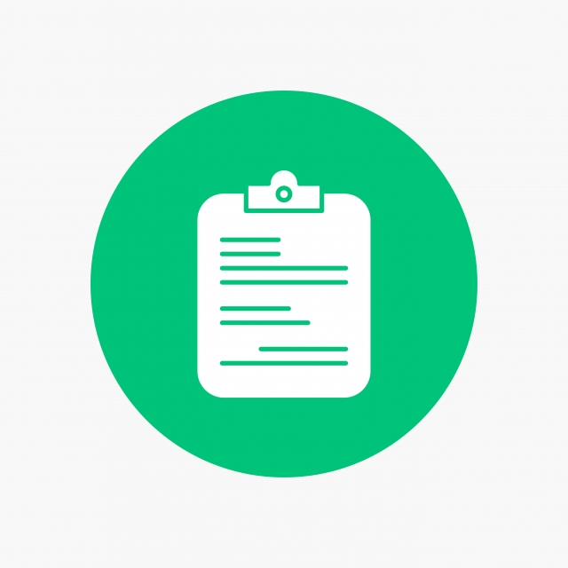

Documentos
Laura Marcela Duarte ha presentado una Denuncia Penal de abuso sexual en contra de Emanuel Rojas
La entrevista de More Rojas

- ¿Los documentos aportan evidencias suficientes para probar que se trata de un caso de abuso sexual? Escribí los elementos de cada evidencia que constituyan indicios de abuso.
- En los recuadros vacíos escribí qué otras pruebas solicitarías (si lo considerás necesario) y comentá qué podrían aportar.
*Podrás retomar estas ideas en los próximos días. Cuanto más trabajes en tus notas más elementos tendrás para resolver la actividad de cierre de la semana.*